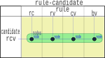
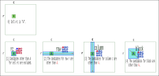
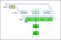
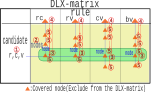

DLX
DLXは、「完全被覆問題」を解くためのアルゴリズムです。数独専用のアルゴリズムではありません。
完全被覆問題は、与えられた集合から部分集合の集まりを選び出し、元の集合の各要素がいずれか一つの部分集合にちょうど一度だけ含まれるようにする問題です。
例えば、「Nクイーン問題」、「グラフの彩色問題」、「ナップサック問題」「数独」などが完全被覆問題の例です。
実社会での応用例では「スケジューリング・割り当て問題」「ルーティング・配送計画」も完全被覆問題の一種です。
ここでは、DLX を数独に適用する方法 を解説します。対象とする数独のサイズは 9x9 の標準的な数独です。
また、解説は GNPXのコードに対応しています。
- DLX の表現形 : 選択肢とルールのマトリックス
- DLX の実装方法：
- DLX のアルゴリズム
DLX の表現形 : 選択肢とルールのマトリックス
数独の選択肢は、9x9 のマス目のそれぞれに、1～9 の数字を入れることです。
数独のルールは、行・列・ブロックのそれぞれに、1～9 の数字が重複しないように配置する ことです。
（1）DLX表現の要素
DLXは、選択肢とルールを次のマトリクスで表します。
縦軸は選択肢(r,c,v),、横軸はルールです。

| 数独での意味 | サイズ | |
| 行 | 候補「(r,c)にvを入れる」 | 9×9×9 = 729 |
| 列 | 数字配置のルール | 4種類×81 = 324 |
数独のルールは、マス目に数字を入れると、行・列・ブロックの重複禁止です。これは、4種類のルールに分けることができます。
- マス(r,c)に数字がちょうど1つ入る
- 行rに数字vがちょうど1回入る
- 列cに数字vがちょうど1回入る
- ブロックbに数字vがちょうど1回入る
/images/img109/01_Candidates_Constraints.txt これが選択肢とルールのマトリクスの表現形です。
数独枠に、数字を1つ配置します。例えば、"(0)セル-rc に数字vを置く"とします。 その結果、以下のように盤面全体に状態が変化します。
(2) 行-r に数字v はない。
(3) 列-c に数字v はない。
(4) ブロック-b に数字v はない。

そのを効率よく全体の状態に反映する方法です。 マトリクスは 98.7% が空白です。 /images/rc10v5_Fixed.txt
/images/rc10v5_Fixed.txt
DLX の実装
数独の場合、「選択肢とルール」のマトリックスは 98.7％ が空白です。
完全被覆問題（exact cover problem）の表現形式には、Donald Knuth が提案した「ダンシング・リンク（Dancing Links）」が用いられます。
「ダンシング・リンク」は、二重の双方向連結リストです。行や列の削除および復元を効率的に行うことができます。

(1) 要素クラス
二重の双方向連結リストの要素クラスは、次のように定義されます。
Node クラスは、「選択肢とルール」のマトリックス要素を表します。
ColumnNodeは、列ヘッダーを表します。ColumnNodeを経由してNodeにアクセスします。
headerは、マトリックスに導く最初のオブジェクトです。
Node、ColumnNodeは、マトリクスの要素を連結する4つのポインターを持っています。
このポインターで、「Header」->「ColumnNode」->「Node」とマトリックスの要素にアクセスします。
public class Node{ public Node L, R, U, D; public ColumnNode Column; public object Tag; // Arbitrary data storing which candidate this row corresponds to. public Node(){ L = R = U = D = this; } } public class ColumnNode: Node{ public int Size; public string Name; public ColumnNode(string name){ Name = name; Size = 0; Column = this; } }
(2) ルールの設定/br>
public SudokuSolver(){ // the DLX skeleton is built. _dlx = new L0_DLX( L1_Sudoku_Constraints.NumColumns ); // *** Create DLX Skeleton. L2_candidateNodes_nodes = new L0_Node[_size, _size, L1_Sudoku_Constraints.NumValues+1][]; // Construct all 729 rows in the L0_DLX structure according to the Sudoku rules (L1_Sudoku_Constraints). // This structure itself remains unchanged thereafter (although it is temporarily covered within L0_Solve(), // it is always uncovered to restore the original state). int kx=0; foreach( var row in L1_Sudoku_Constraints.AllCandidates() ){ // *** Add Sudoku Constraint. var candidate = row.Candidate; L0_Node[] nodes = _dlx.L0_AddRow( row.Columns, candidate); candidateNodes_nodes[ candidate.Row, candidate.Col, candidate.Value] = nodes; // *** Define the Table for Nodes. } } public static IEnumerableAllCandidates(){ for( int r=0; r<Size; r++ ){ for( int c=0; c<Size; c++ ){ int boxIndex = (r/Box)*Box + (c/Box); for( int v=1; v<=NumValues; v++){ int cellCol = 0 + r*Size + c; int rowCol = 81 + r*NumValues + (v-1); int colCol = 162 + c*NumValues + (v-1); int boxCol = 243 + boxIndex*NumValues + (v-1); var candidate = new L1_SudokuCandidate { Row=r, Col=c, Value=v }; yield return new L1_SudokuCandidateRow( candidate, new[]{ cellCol, rowCol, colCol, boxCol }); } } } }
(3) 候補数字の確定(仮確定) DLXの操作は、"Nodes"の参照配列を用いて 行います。
”Nodes”は、DLXマトリックスの制約群(マス目に数字を入れるルールと、行・列・ブロックの重複禁止ルール)です。
L0_Node[,,][] nodes = candidateNodes_nodes[ candidate.Row, candidate.Col, candidate.Value] = nodes;

DLXは、基本的には TryAndError 手法の一種です。Try選択による影響、すなわち候補の否定的な影響を状態に反映する”仕組み”を持つことが特徴です。